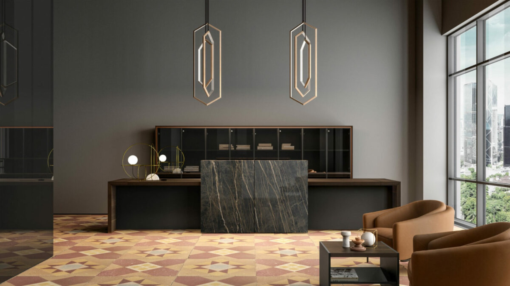

Dal 1987
Un cantiere,
un solo interlocutore.
Artes nasce come falegnameria e cresce fino a diventare un interlocutore unico per il contract: progettazione, produzione interna, rete di partner selezionati e montaggio, seguiti dallo stesso team dal rilievo al collaudo.

01 — Il percorso
Dalla falegnameria
al contract integrato.
Quattro tappe che raccontano perché oggi seguiamo l'intero cantiere invece di fornire solo gli arredi.
1987
Primo cantiere
Nasce l'officina di falegnameria: arredi su disegno per i primi clienti locali.
Anni '90 — 2000
Rete di partner
Si struttura la rete di partner qualificati per lapidei, vetro, metalli e imbottiti.
2010
Metodo contract
Il processo si formalizza in sette fasi con un unico project manager per commessa.
Oggi
Cinque settori
Workspace, retail, food e hospitality: lo stesso metodo applicato a spazi molto diversi tra loro.
02 — Come lavoriamo
Quello che
ci contraddistingue.
Metodo
Sette fasi, un referente
Rilievo, progettazione, produzione, fornitura, logistica, montaggio, post-vendita seguiti dallo stesso project manager.
Officina
Fuori standard su disegno
Falegnameria e metalli interni, rete qualificata per lapidei, vetro e imbottiti. Nessun lotto minimo.
Pubblica amministrazione
Abilitati MEPA
Scuole, biblioteche, uffici pubblici e strutture sanitarie: presenti su Acquisti in Rete PA con procedura gestita da noi.